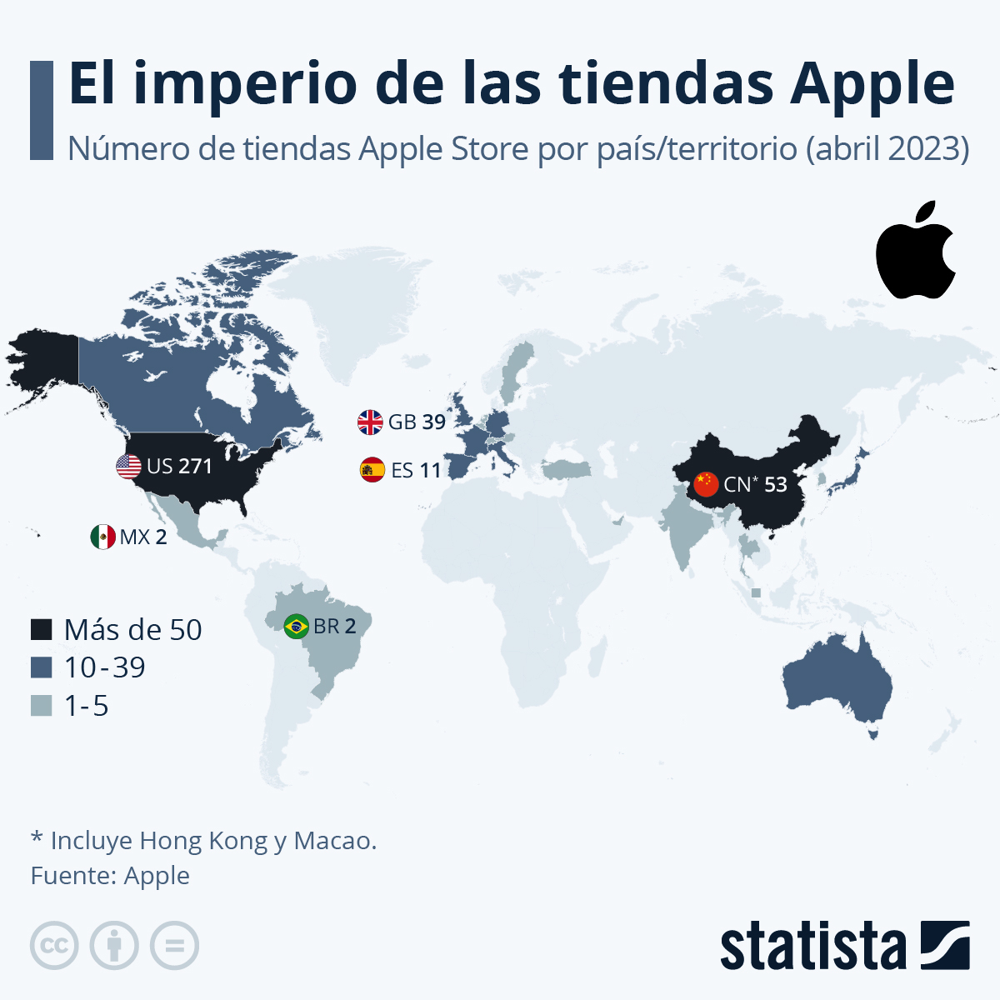

Quienes somos
Apple, Inc. es una empresa tecnológica estadounidense que diseña y produce equipos electrónicos, software y servicios en línea. Tiene su sede principal en el Apple Park, en Cupertino (California, Estados Unidos) y la sede europea en la ciudad de Cork (Irlanda).3Sus productos de hardware incluyen el teléfono inteligente iPhone, la tableta iPad, la computadora personal Mac, el reproductor de medios portátil iPod, el reloj inteligente Apple Watch, las gafas de realidad mixta y computación espacial Apple Vision Pro y el reproductor de medios digitales Apple TV. Entre el software de Apple se encuentran los sistemas operativos iOS, iPadOS, macOS, watchOS, visionOS y tvOS, el explorador de contenido multimedia iTunes, la suite iWork (software de productividad), Final Cut Pro X (una suite de edición de vídeo profesional), Logic Pro (software para edición de audio en pistas de audio), Xsan (software para el intercambio de datos entre servidores) y el buscador y navegador Web Safari. La empresa operaba, en mayo de 2014, más de 408 tiendas propias en nueve países,4 miles de distribuidores (destacándose los distribuidores prémium o Apple Premium Resellers) y una tienda en línea (disponible en varios países) donde se venden sus productos y se presta asistencia técnica. De acuerdo con la revista Fortune, Apple fue la empresa más llamativa en el mundo entre 2008 y 2012.5 En 2015, se convirtió en la empresa más valiosa del mundo según el índice BrandZ al alcanzar los 247.000 millones de euros de valor.6 El 3 de agosto de 2018, según The Wall Street Journal, la compañía se convirtió en la primera empresa en lograr una capitalización de mercado de 2 billones (mil millardos) de dólares. En el 2020, su valor se estimaba en unos 2,5 billones de dólares.7 y al 3 de enero de 2022, rebasaba la cifra de los 3 billones de dólares.89 Las dos primeras tiendas Apple Inc abrieron en los Estados Unidos en 2001. En 2003, amplió su red en Japón, con la apertura de la primera tienda fuera de los EE. UU. Esto fue seguido por la apertura de tiendas en Australia, Bélgica, Japón, Canadá, Dinamarca, Reino Unido, Italia, Singapur, Alemania, Suecia, Francia, Países Bajos, Suiza, Austria, Corea del Sur, Macau, Taiwán, Turquía, Emiratos Árabes Unidos, Marruecos, Polonia, y Tailandia. con distribuidores autorizados en Arabia Saudita, Noruega, Nueva Zelanda, Sudáfrica, Islandia, Estonia, Rusia, Irlanda, Finlandia, y Luxemburgo. En Iberoamérica cuenta con tiendas en España, México y Brasil, además de tener distribuidores autorizados en Portugal, Colombia, Argentina, Chile, Perú, Panamá, República Dominicana y Costa Rica.
Historia de Apple Inc.
Apple Inc., originalmente llamada Apple Computer, Inc., es una corporación multinacional que crea y comercializa productos electrónicos de consumo y software informático asociado, y es un distribuidor digital de contenido multimedia. Las principales líneas de productos de Apple son el teléfono inteligente iPhone, la tableta iPad y la computadora personal Macintosh . La empresa ofrece sus productos en línea y tiene una cadena de tiendas minoristas conocida como Apple Stores. Los fundadores Steve Jobs, Steve Wozniak y Ronald Wayne crearon Apple Computer Co. el 1 de abril de 1976 para comercializar la computadora de escritorio Apple I de Wozniak,2 y Jobs y Wozniak incorporaron la empresa el 3 de enero de 1977, 3 en Cupertino, California.
Prefundación
Steve Jobs y Steve Wozniak, conocidos colectivamente como "los dos Steves", se conocieron por primera vez a mediados de 1971, cuando su amigo en común Bill Fernandez presentó a Wozniak, de 21 años, a Jobs, de 16.1112 Su primera asociación comercial comenzó en el otoño de ese año cuando Wozniak, un ingeniero electrónico autodidacta, leyó un artículo en la revista Esquire que describía un dispositivo que podía realizar llamadas telefónicas de larga distancia gratuitas emitiendo un tono específico. chirridos Wozniak comenzó a construir sus “blue boxes” originales, que probó llamando a la Ciudad del Vaticano haciéndose pasar por Henry Kissinger queriendo hablar con el Papa.13 Jobs logró vender unas doscientas cajas azules a $150 cada una y dividió las ganancias con Wozniak.1112 Más tarde, Jobs le dijo a su biógrafo que si no hubiera sido por las cajas azules de Wozniak, "no habría existido Apple".